Before beginning this week's module, make sure you are on your week1 branch, and from there create a new branch called "Week6_RecyclerView". After, make sure you are on the new branch. If you aren't, make sure you checkout the new branch.
Recycler View is list that can show a various number of elements, and the user can scroll through the elements:
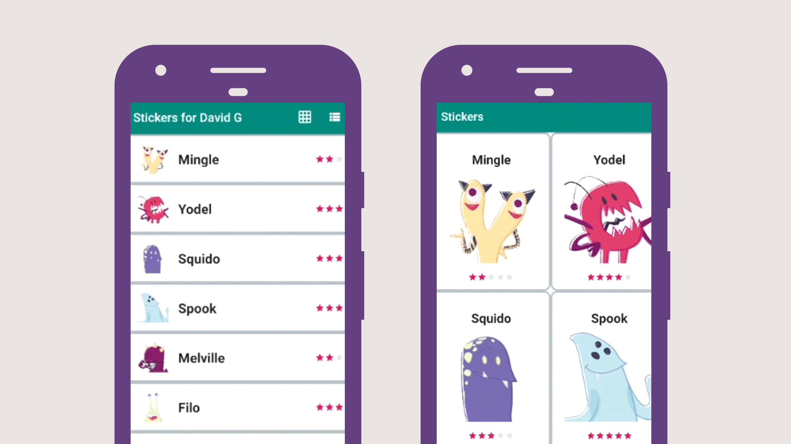
RecyclerView is relatively new to Android, and is not part of the standard Android classes that come with AndroidStudio. It replaces the ListView, and it offers some speed and memory improvements. Since RecyclerView is not part of the normal instation, you have to add to add the library to your app/build.gradle file:
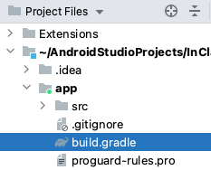
In this file, find the dependencies section :
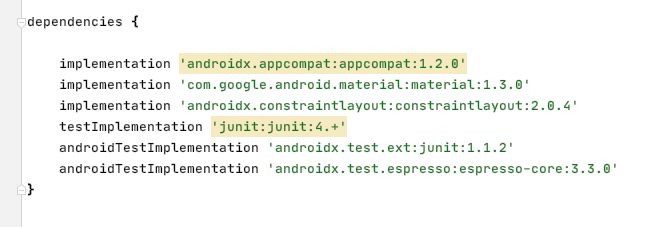
and add this line:
implementation 'androidx.recyclerview:recyclerview:1.1.0'
You will notice that the line gets highlighted in yellow:
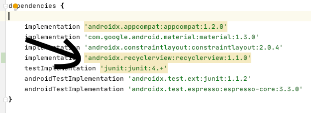
The yellow highlighting is Android Studio telling you that there's a new version of the recyclerview library available for download. Just hover your mouse over the line and click on "Change to 1.2.1" and you'll notice it updates 1.1.0 to 1.2.1:
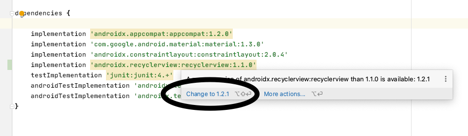
Change all the other yellow lines, except the junit:4.+ one. Writing this using the + symbol means just take the latest one after 4.0.
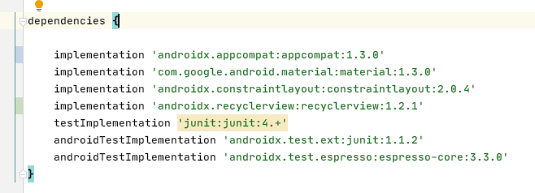
You could change the line implementation
'androidx.recyclerview:recyclerview:1.1.0' to implementation 'androidx.recyclerview:recyclerview:1.+'
and Android Studio will always take the latest version of the recyclerview library of version 1.
Once you are done modifying the build.gradle file, you have to click on
"Sync now" in the top right so that it downloads the new jar files from the Gradle
repository. It's an online database of many different jar files which
AndroidStudio will download automatically for you and link in the *.jar
files to your project.
In previous weeks, you created a new empty activity using the menu options. This week, you will do the same to create a class called ChatRoom. Select "File" -> "New" -> "Activity" -> "Empty Activity": 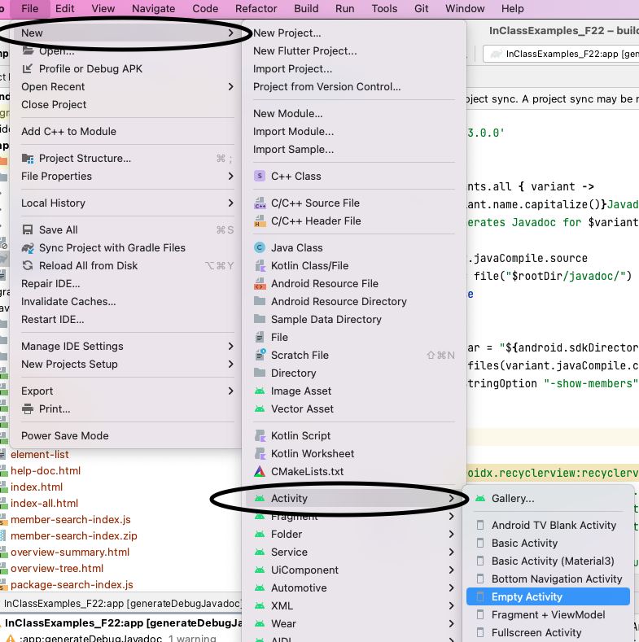
Call the new class "ChatRoom"
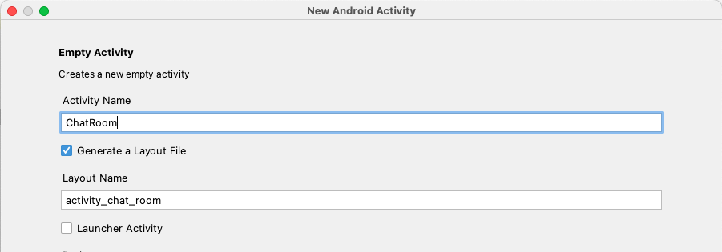
Go ahead and select the "Launcher Activity" checkbox. This will make it the Activity that gets launched on startup. Click Finish and then click on the "Add" button to add the file to the git tracking list.
You should now see your new project. It uses the old setContentView() function, so modify it to use the new ViewBinding. The layout file name here is activity_chat_room so the binding class that gets generated should be ActivityChatRoomBinding
Then look at the layout file activity_chat_room.xml and add a <RecyclerView> widget. Use the ConstraintView to constrain the RecyclerView to all 4 sides of the parent: 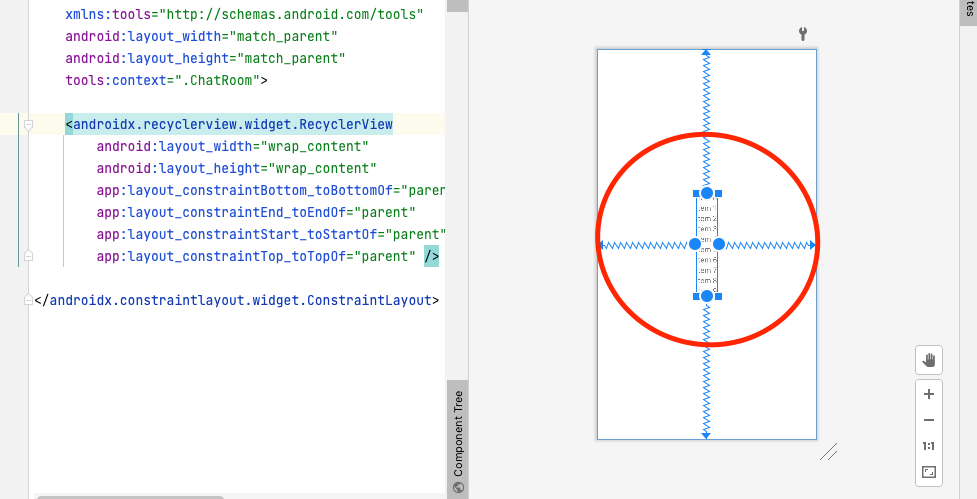
Notice that it doesn't extend all the way to the sides? That's because it's set to "wrap_content", meaning it's the minimum size required to make the content fit. If you change the layout_width and layout_height to 0dp, which means match_constraint, or drag the edges all the way to the attachment point of the constraint. 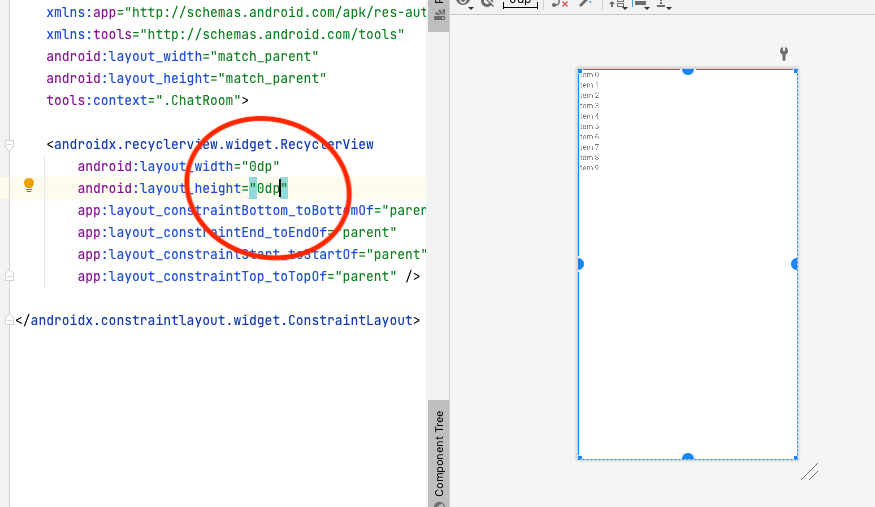 If we give the RecycleView an id, then we'll load it in Java using ViewBinding. Here, I've given the id named recycleView in XML, and I can access it in Java: 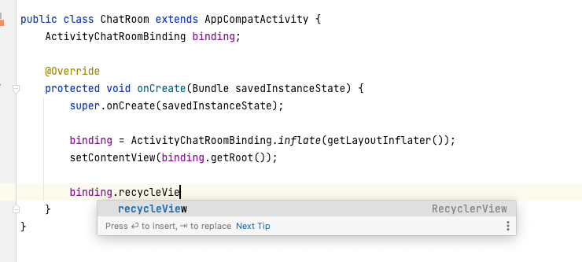
Once your RecycleView is loaded, the only thing you have to do is call setAdapter( ) 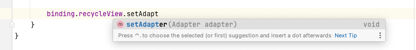 What goes inside the parentheses is new RecyclerView.Adapter() 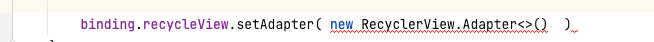 Next, we'll create an inner class inside ChatRoom called MyRowHolder which will be an object for representing everything that goes on a row in the list. Create an inner class in your ChatRoom.java class like this:
class MyRowHolder extends RecyclerView.ViewHolder {
public MyRowHolder(@NonNull View itemView) {
super(itemView);
}
} For now, we'll just leave it empty but this class is what goes inside the generics < > in the Adapter :
binding.recycleView.setAdapter(new RecyclerView.Adapter<MyRowHolder>() )
If you hover your mouse over the red lines, you get a messages saying that Adapter can't be instantiated
because it's missing functions.
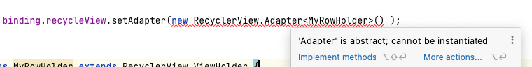
Click on the "Implement methods" link and then select "Ok" to generate the missing methods and you'll see this:
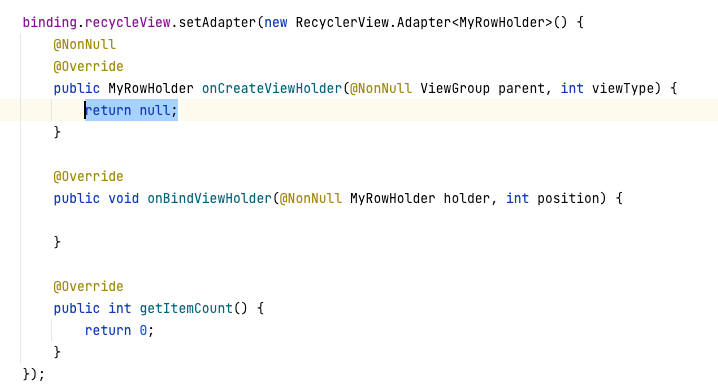
A RecyclerView.Adapter object needs 3 functions to tell the view how to draw items in the list.
Those functions are:
Continue on to the next module to learn what to put in these functions.